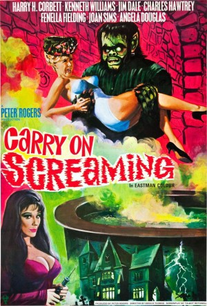

#11785 Carry On 12 - Ist ja irre - Alarm im Gruselschloß
Alternativ: Carry On Screaming! (Englischer Titel)
 
 IMDB-Wertung: 6.8 / 10
IMDB-Wertung: 6.8 / 10  Tomatometer: 67
Tomatometer: 67  Metascore: 0
Metascore: 0 
Ein Monster entführt die Freundin eines jungen Mannes. Die Ermittlungen führen in das Schloß eines Arztes, der aus schönen jungen Frauen Schaufensterpuppen herstellt. Als noch ein zweites Monster auftaucht, überstürzen sich die unheimlichen Abenteuer. Klamauk mit gelegentlichen Ansätzen zur Horrorfilm-Parodie.
Jahr: 1966
Dauer: 92 Minuten
FSK:
Land: England Studio: Anglo AmalgamatedTonspuren:
Untertitel:
Auflösung: SD (608x368) Größe: 700 MB
Genre: Horror, Komödie
Regisseur: Gerald Thomas
Drehbuch: Talbot Rothwell
Soundtrack: Eric Rogers
Darsteller:
Datei: X:\7+mehr(A-Z)\Carry On\Carry On 12 - Ist ja irre - Alarm im Gruselschloß (1966, FSK, 608x368).avi seit 20.09.2019
Festplatte: HD Collection-7+mehr(A-Z)+Person
 Es gibt insgesamt 33 Filme in der Gruppe '7+mehr(A-Z)\Carry On'
Es gibt insgesamt 33 Filme in der Gruppe '7+mehr(A-Z)\Carry On'